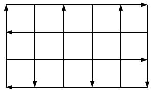

Thành phố X có hệ thống giao thông gồm n đường ngang và m đường dọc. Các đường ngang và đường dọc cắt nhau tạo thành n x m giao lộ (ngã hai, ngã ba, ngã tư) như hình bên dưới. Ban đầu các đường đều có thể chạy xe hai chiều nhưng sau một thời gian mật độ giao thông tăng lên nên phải bố trí tất cả các đường thành một chiều. Tuy nhiên phương án bố trí phải đảm bảo có đường đi giữa hai giao lộ bất kỳ (kể cả ngã hai). Bạn hãy giúp ban quản lý kiểm tra phương án đưa ra có thỏa mãn điều kiện này không nhé.

Dữ liệu nhập:
- Dòng đầu tiên là hai số nguyên n và m (1 ≤ n, m ≤ 100)
- Dòng thứ hai gồm n ký tự L và R thể hiện phương án bố trí n đường ngang theo thứ tự từ trên xuống dưới. L là đường một chiều sang hướng trái và R là đường một chiều sang hướng phải.
- Dòng thứ ba gồm m ký tự U và D thể hiện phương án bố trí m đường dọc theo thứ tự từ trái sang phải. U là đường một chiều lên hướng lên và D là đường một chiều hướng xuống.
Dữ liệu xuất:
- Nếu tồn tại đường đi giữa tất cả hai giao lộ bất kỳ, in ra YES.
- Nếu có hai giao lộ không tìm được đường đi, in ra NO.
(Nếu có đường đi từ giao lộ X đến giao lộ Y, nhưng không có đường đi từ Y đến X thì cũng là NO)